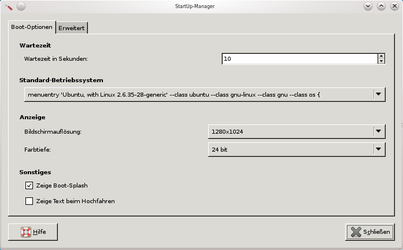
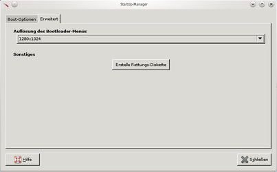
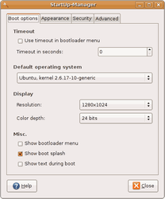
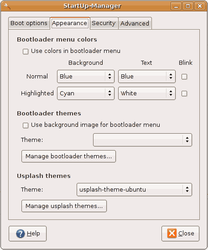
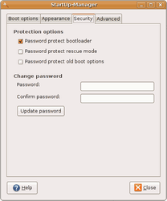
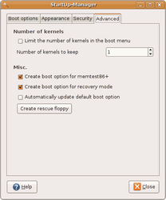

Startup Manager
Archivierte Anleitung
Dieser Artikel wurde archiviert, da er - oder Teile daraus - nur noch unter einer älteren Ubuntu-Version nutzbar ist. Diese Anleitung wird vom Wiki-Team weder auf Richtigkeit überprüft noch anderweitig gepflegt. Zusätzlich wurde der Artikel für weitere Änderungen gesperrt.
Zum Verständnis dieses Artikels sind folgende Seiten hilfreich:
Startup Manager  (Sum) ist ein Programm, das es erlaubt, das GRUB-Menü und GRUB2-Menü zu verändern. Dabei stehen die Optionen Farbe, Splash Screen, Passwort-Einstellung und der zu startende Kernel zur Verfügung. Daneben ist auch die Verwaltung und Installation von Boot-Designs bzw. der Usplash-Designs möglich. Diese Bearbeitung ist zwar auch manuell möglich, allerdings längst nicht so komfortabel.
(Sum) ist ein Programm, das es erlaubt, das GRUB-Menü und GRUB2-Menü zu verändern. Dabei stehen die Optionen Farbe, Splash Screen, Passwort-Einstellung und der zu startende Kernel zur Verfügung. Daneben ist auch die Verwaltung und Installation von Boot-Designs bzw. der Usplash-Designs möglich. Diese Bearbeitung ist zwar auch manuell möglich, allerdings längst nicht so komfortabel.
Der Startup Manager wird seit 2012 nicht mehr weiterentwickelt. Der Entwickler rät deswegen zur Benutzung des GRUB Customizer.
Achtung!
Der folgende Hinweis bezieht sich auf Grub, nicht auf GRUB2:
Der Startup-Manager ändert die zum Booten benötigte Konfigurationsdatei /boot/grub/menu.lst. In der Vergangenheit hat sich gezeigt, dass der Startup Manager dies nicht immer zuverlässig macht. Problematisch kann es werden, wenn eine andere Linux-Distribution zusätzlich zu Ubuntu installiert wurde, man die Datei menu.lst selber verändert hat oder Bootsplash-Designs aus unbekannten Quellen installiert.
Funktionsumfang¶
Grub-Anzeigedauer einstellen
Standard-Betriebssystem einstellen
Usplash-Auflösung verändern (Auflösung 640x480, 800x600, 1024x768, 1280x1024, 1600x1200 einstellbar)
Bootloader ein/ausschalten (nicht für Grub2)
Bootsplash ein/ausschalten
Text beim Booten anzeigen/ausschalten
Bootloader-Menüfarben einstellen (nicht für Grub2)
Grub Design einstellen (nicht für Grub2)
Usplash-Design einstellen, ein/ausschalten (nicht für Grub2)
Bootloader mit einem Passwort versehen (nicht für Grub2)
Notfall-Diskette anlegen
Hinweis:
Die Hinweise "nicht für Grub2" beziehen sich nur auf den Startup Manager. Grub2 bietet umfangreichere Konfigurationsmöglichkeiten. Wer mehr darüber erfahren will, sollte sich mit GRUB2 vertraut machen.
Installation¶
Paketquelle¶
Man kann man das Programm direkt über die Ubuntuquellen installieren, das benötigte Paket lautet:
startupmanager (universe [2] )
 mit apturl
mit apturl
Paketliste zum Kopieren:
sudo apt-get install startupmanager
sudo aptitude install startupmanager
Einzelpaket¶
Auf der Projekt-Webseite ist die jeweils aktuellste Version verfügbar. Diese kann herunter geladen und wie gewohnt installiert werden [3].
Hinweis!
Fremdpakete können das System gefährden.
Start¶
Gnome 2¶
"System → Administration → StartUp-Manager"
KDE¶
"Anwendungsstarter-Menü → Einstellungen → StartUp-Mananger"
Benutzung/Konfiguration¶
Nach dem Starten von Startup-Manager stehen vier Reiter zur Verfügung:
Unter "Boot Options" und dem Menüpunkt "Timeout" stellt man die Anzeigedauer für das Grub-Menüs ein.
Unter "Default operating system" kann das Standard-Betriebssystem gewählt werden oder besser gesagt das Betriebssystem, das an erster Stelle des Grub-Menüs steht.
Unter "Display" wird die gewünschte Bootauflösung eingestellt.
StartUp-Manager unter KDE 4.5.5, mit GRUB2
|  |
| Boot-Optionen |
|  |
| Erweitert |
Hinweis:
Die Reiter "Appearance", "Security" und "Advanced" stehen für GRUB2 nicht zur Verfügung.
Im nächsten Reiter "Appearance" kann die Bootloader-Menüfarbe, das Bootloader-Design und das Usplash-Design eingestellt werden.
Im Reiter "Security" kann der Bootloader mit einem Passwort versehen werden.
Im nächsten Reiter "Advanced" lässt sich die Anzahl der Kernels limitieren, die dem Grub-Menü zur Verfügung stehen sollen. Desweiteren stehen die Optionen "memtest86" und "Recovery Mode" zur Verfügung, die sich an- oder abgewählt werden können.
|  |
| Boot Options |
|  |
| Appearance |
|  |
| Security |
|  |
| Advanced |
- Erstellt mit Inyoka
-
 2004 – 2017 ubuntuusers.de • Einige Rechte vorbehalten
2004 – 2017 ubuntuusers.de • Einige Rechte vorbehalten
Lizenz • Kontakt • Datenschutz • Impressum • Serverstatus -
Serverhousing gespendet von